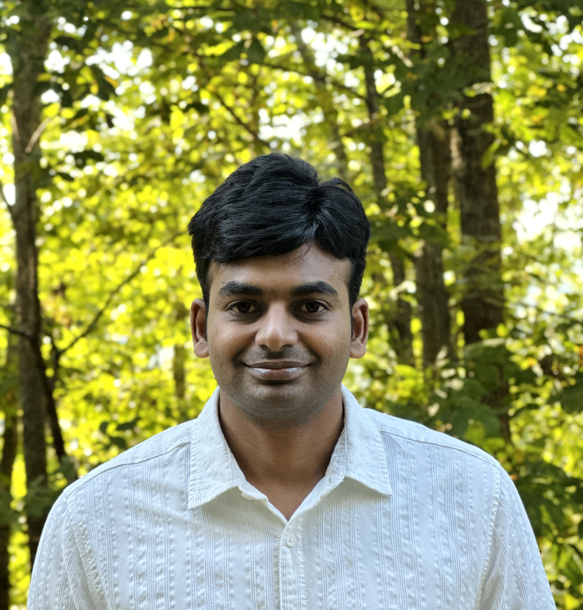

Venugopalareddy Mekala, Ph.D.
Computational Biologist | Bioinformatician | Machine Learning Scientist | Cancer Genomics & Multi-omics Researcher
About
I am a computational biologist with a Ph.D. in Bioinformatics, specializing in cancer genomics, multi-omics data integration, and machine learning. My research focuses on developing computational approaches to understand cancer biology and translate large-scale biological data into clinically meaningful insights.
My work spans transcriptomics, single-cell RNA sequencing, spatial transcriptomics, epigenomics, proteomics, mass spectrometry, and next-generation sequencing (NGS). I develop reproducible bioinformatics pipelines and predictive models to investigate the tumor microenvironment, identify biomarkers, and improve precision oncology.
I am passionate about bridging biology, data science, and medicine by combining computational methods with high-throughput technologies to address clinically relevant questions in cancer research.
Outside of research, I enjoy exploring hiking trails and discovering new places in nature.
Research Focus Areas

Single-Cell Transcriptomics
Mapping protective plasma B-cell sub-populations in lung adenocarcinoma recurrence and analyzing cell heterogeneity in male breast cancer using 10X Genomics.

Epigenetic Regulators
Uncovering the prognostic impact of epigenetic modifier aberrations in bladder cancer to stratify risk and evaluate patient response to targeted therapies.

Genomics & Rare Variants
Analyzing Whole Genome Sequencing (WGS) datasets at Academia Sinica to identify rare population-specific genetic variants associated with metabolic conditions.

Prognostic ML Models
Engineering predictive machine learning models incorporating multi-omics integration and clinical indicators to forecast cancer progression.

Nextflow & HPC Pipelines
Constructing scalable bioinformatics workflows with Nextflow, R, Python, and HPC infrastructure for automated bulk/small RNA-seq processing.

Omics & Clinical Trials
Conducting integrative multi-omics profiling of clinical trial data evaluating physiological and genomic dynamics under structured interventions.
Experience & Education
Postdoctoral Fellow
University of Alabama at Birmingham (UAB), USA
- Department of Nutrition Sciences · Dr. Ritu Aneja's Lab
Postdoctoral Associate
Baylor College of Medicine, Houston, TX, USA
- Focusing on single-cell transcriptomics and multi-omics profiling in cancer research.
Postdoctoral Fellow
Academia Sinica, Taiwan
- Whole-genome sequencing analysis and variant discovery.
Doctor of Philosophy (Ph.D.) – Bioinformatics
Asia University, Taiwan
Research Assistant
Osmania University, Hyderabad, India
Master's Degree (M.Pharm) – Pharmacology
Andhra University, India
Bachelor's Degree (B.Pharm) – Pharmacy
Andhra University, India
Selected Publications
IL1R1 blockade augments CD40 agonist mediated immunity in pancreatic cancer.
DHODH links mitochondrial bioenergetics, one-carbon metabolism, and DNA repair to sustain aggressive prostate adenocarcinoma.
Gene signatures characterizing driver mutations in lung squamous carcinoma are predictive of the progression of pre-cancer lesions.
Integrative Analysis Reveals the Prognostic Effects of Epigenetic Regulators in Bladder Cancer.
Whole-genome sequencing reveals rare variants associated with gout in Taiwanese males.
Computational Methods
Programming
Bioinformatics
Omics
Methods
Wet Lab
Connect & Contact
I'm always happy to discuss research collaborations, computational biology, bioinformatics, and multi-omics research.